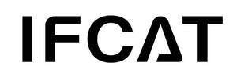

Trade Mark Journal No.2026/007 13 February 2026
UK00004331298 28 January 2026 (9,11)

- Class 9
- Central processing unit [CPU] coolers; Smartwatches; Electronic pens [visual display units]; Computer stylus; USB flash drives; Protective films adapted for computer screens; Computer keyboards; Mouse [computer peripheral]; Smartglasses; Bags adapted for laptops; Computer peripheral devices; Electronic card readers; Stands adapted for tablet computers; Computer parallel port; Chronographs [time recording apparatus]; Facial recognition apparatus; Time clocks [time recording devices]; Scales; Measures; Digital signs; Transponders; In-car telephone handset cradles; Smartphone screen magnifiers; USB Dongles [Wireless network adapters]; Protective films adapted for smartphones; Holders for cell phones; Home automation hubs; Protective cases for smartphones; Selfie sticks used as smartphone accessories; Lanyards for mobile telephones; Cases for smartphones; Global Positioning System [GPS] apparatus; Wearable activity trackers; Security surveillance robots; Ear pads for headphones; Dashboard cameras; Microphones; Earphones; Audio and video receivers; Microphone stands; Audio digitisers; Digital cameras; Portable media players; Audio interfaces; Cabinets for loudspeakers; Selfie ring lights for smartphones; Mini projector; Flash lamps for smartphones; Cameras [photography]; Measuring instruments; Breathalyzers; Infrared thermometers, not for medical purposes; Optical apparatus and instruments; Data cable; Audio cable; USB cable; Adapter plug; Low-voltage power supplies; Video screens; Remote controls; Home remote controls; Electrical adapters; Electric sockets; Inverters [electricity]; Plugboards; Voltage stabilizing power supply; Fire extinguishers; Theft prevention installations, electric; 3D spectacles; Batteries, electric; Charging stations for electric vehicles; Portable power supplies (rechargeable batteries); Charging stations for electric vehicles; Battery chargers; Stylus pens for touchscreens; Protection devices for personal use against accidents.
- Class 11
- Lighting apparatus and installations; Germicidal lamps for purifying air; Cooking apparatus and installations; Air purifying apparatus and machines; Humidifiers; Air-conditioning installations; Fog machines; Watering installations, automatic; Water purification installations; Blankets, electric, not for medical purposes; Air deodorizing apparatus; Air dryers; Disinfectant apparatus; Lighting apparatus for vehicles; Nail lamps; Refrigerators; Electric fans for personal use; Hair dryers; Heating apparatus; Heating installations; Bath installations; Radiators, electric; Hot water bottles; Deodorizing apparatus, not for personal use; Table lamps; Drying apparatus and installations; Facial Steamer.
Shenzhen yuanlimao Technology Co. ,Ltd.
Representative: Handsome I.P. Ltd